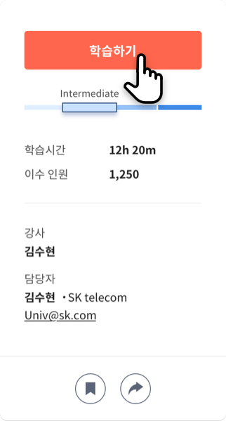
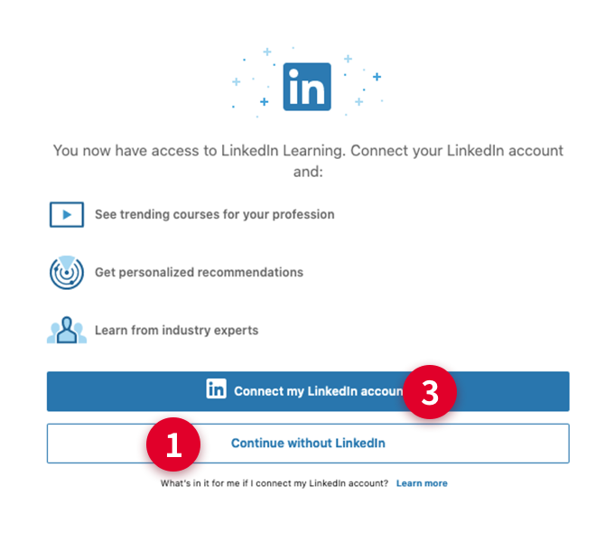
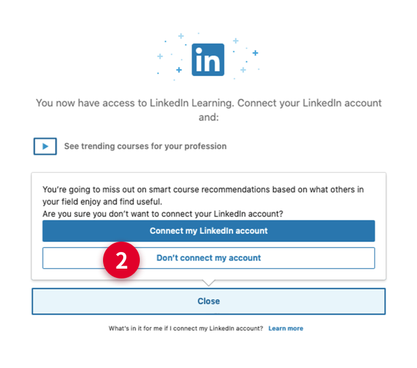

LinkedIn 최초 접속 시 학습 방법 안내
-
1. Linkedin 과정을 처음 학습하는 경우, 아래와 같이 기존에 개인이 보유하고 있는 ‘Linkedin 계정’과 연동하여 사용할 것인지를 확인하는 화면이 보여집니다.
-
2. 기존에 개인이 보유하고 있는 ‘Linkedin 계정’과 ‘mySUNI 계정’을 연결하지 않고 학습하고 싶은 경우,아래 표시된 ①번, ②번을 순서대로 클릭하시면, ‘mySUNI계정’으로 학습이 가능합니다.최초 연결 이후에는 학습할 때 마다 별도 로그인 할 필요가 없습니다.
-
3. 기존에 개인이 보유하고 있는 ‘Linkedin 계정’과 ‘mySUNI 계정’을 연결하여 학습하고 싶은 경우아래 표시된 ③번을 클릭후 개인이 보유한 Linkedin 계정의 ID/PW를 입력하면 됩니다.LinkedIn 과정을 학습할 때 마다 개인 계정을 입력하면, 학습이력이 LinkedIn profile에 통합 관리됩니다.
-

상세화면에서 [학습하기] 버튼 클릭next
-

개인 계정과의 연동을 확인하는 팝업next
-

재 확인하는 팝업